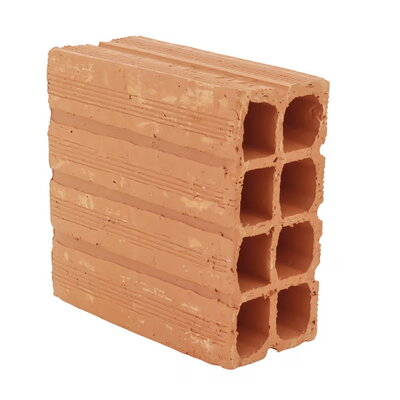

Bloco cerâmico vedação 9x19x19cm
Preço: R$0,89/UN
Descrição detalhada
| Produto | Bloco |
|---|---|
| Tipo de bloco | Vedação |
| Tipo de material | Argila |
| Quantidade de furos | 8 furos |
| Altura | 19,00 cm |
| Comprimento | 19,00 cm |
| Largura | 9,00 cm |
| Peso | 2,00 kg |
| Quantidade de blocos por m² | 25 blocos |